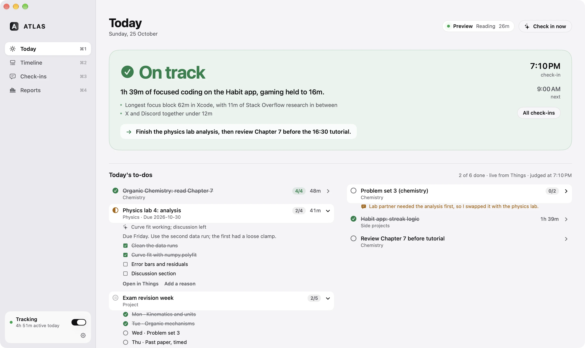
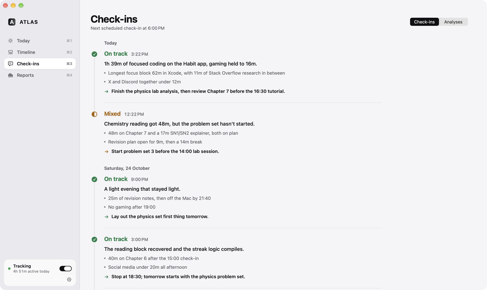

Know where your time actually goes.
ATLAS quietly records what you really do on your Mac and keeps it there. Every three hours, Claude reads it beside your plan, tells you plainly whether you're on track, and updates your to-dos and calendar.

See it in 54 seconds.
“1h 39m of focused coding, gaming held to 16 minutes.” Credit for the work that mattered.
“Chemistry reading got 48 minutes, but the problem set hasn't started.” What slipped, without guilt.
“70 minutes of gaming during the revision block.” Said once, with a concrete next step.
One verdict leads. Everything else is evidence.
ATLAS only tracks. The judgment comes from a scheduled Claude check-in that compares your day with your calendar and your morning briefing.

Every check-in on one rail: the verdict, the evidence in minutes, and the next step, timed to your calendar.
The check-in comes to you, and keeps your plan honest.
Every three hours the scheduled check-in reads ATLAS beside your Things list, your calendar and your morning briefing, then closes the loop.
- Things
- To-dos the evidence clearly shows finished are checked off; partial progress gets a dated note; the next step is added. Nothing is deleted.
- Calendar
- What you actually did lands beside what you planned as quiet grey blocks, and the next step is booked into a free slot with a reminder.
- Email and phone
- The verdict, the minutes behind it and the next step arrive by email and as a notification.
- ATLAS
- The same verdict and today's to-dos appear on the Today screen.
Your day stays on your Mac.
ATLAS watches highly personal behavior, so privacy is part of how it's built, not a setting you have to find.
- Local-first
- A SQLite database in your Library. Export it, back it up, or delete it at any time.
- No keylogging, no screenshots
- It never reads keystrokes, form fields, passwords, documents or screen contents.
- Exclusions and private mode
- Excluded apps and sites are stored as timing only, with no names, titles or URLs.
- Honest about uncertainty
- Unclassified, idle and untracked time is labeled as such and never guessed.
- Summaries, never streams
- Claude reads a compact summary on schedule, never a live feed or your browsing history.
- Your Claude plan, not API billing
- Check-ins run through Claude with your subscription. ATLAS never falls back to a paid API key.
An MCP server for your own activity.
ATLAS ships with atlasctl, a command-line tool that is also an MCP server. Any Claude session or scheduled task can ask what you actually did and write its verdict back into the app.
# Registered by the installer claude mcp add atlas -- atlasctl mcp # Tools Claude can call get_activity_summary time, apps, focus get_current_activity right now get_recent_checkins earlier verdicts record_checkin save a verdict # Or from a terminal atlasctl today atlasctl summary --from -3h --json
Install in a minute.
Free, about 9 MB, for macOS 14 or later on Apple Silicon or Intel.
- Open the disk image and drag ATLAS into Applications.
- Approve it once. ATLAS isn't notarized by Apple yet, so the first launch is blocked. Open System Settings → Privacy & Security, scroll down, and click Open Anyway next to “ATLAS was blocked”.
- Follow the setup checklist. It asks for each permission, connects Claude, creates your check-in schedule in the Claude app with one paste, and sets where check-ins are emailed. Tracking works from the first step; check-ins need Claude Code with a Claude subscription.
- That's it. ATLAS updates itself: new versions appear in the sidebar and install with one click, keeping your data and permissions.
With Homebrew
brew install --cask zahintapadar/tap/atlas
From source (Xcode 16 or later)
git clone https://github.com/ZahinTapadar/atlas.git cd atlas ./scripts/build-app.sh
Every release is built from this repository by a public workflow. All releases